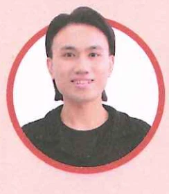
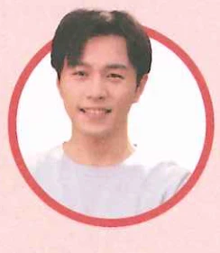
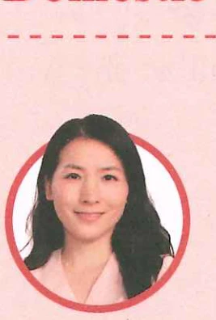
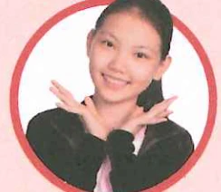
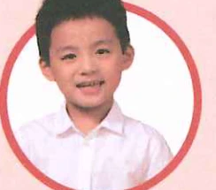
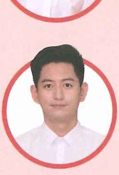

安妮：女，加拿大人，20多岁，某国某高校大学生，在王一飞班里学中文。Annie: Female, Canadian, in her twenties, a university student overseas, studying Chinese in Wang Yifei's class.
Анни: канадка, старше 20 лет, студентка зарубежного университета. Изучает китайский в классе Ван Ифэй.

陈天中：男，泰国人，20多岁，某国某高校大学生，在王一飞班里学中文。Chen Tianzhong: Male, Thai, in his twenties, a university student overseas, studying Chinese in Wang Yifei's class.
Чэнь Тяньчжун: таиландец, старше 20 лет, студент зарубежного университета. Изучает китайский в классе Ван Ифэй.

李文：男，北京人，20多岁，某国某高校中国留学生，学医。与白家月、安妮和陈天中在同一所学校，和他们是好朋友。Li Wen: Male, from Beijing, in his twenties, an international student from China majoring in medicine at a university overseas. He attends the same university as Bai Jiayue, Annie, and Chen Tianzhong, and they are close friends.
Ли Вэнь: пекинский студент, старше 20 лет. Изучает медицину за границей в одном университете с Бай Цзяюэ, Анни и Чэнь Тяньчжуном; они хорошие друзья.
中国国内场景：Domestic Setting in China:
Место действия: Китай:

王一雪：女，北京人，30多岁，某跨国公司北京分公司办公室工作人员，王一飞的堂姐。Wang Yixue: Female, from Beijing, in her thirties, working in the office of the Beijing branch of a multinational company, Wang Yifei's cousin.
Ван Исюэ: пекинка, старше 30 лет, сотрудница офиса пекинского филиала международной компании, двоюродная сестра Ван Ифэй.
刘明：男，北京人，40岁左右，医生，王一雪的丈夫。Liu Ming: Male, from Beijing, about 40 years old, a doctor, Wang Yixue's husband.
Лю Мин: пекинский врач, около 40 лет, муж Ван Исюэ.

刘小雪：女，北京人，12岁，小学生，刘明和王一雪的女儿。Liu Xiaoxue: Female, from Beijing, 12 years old, a primary school student, the daughter of Liu Ming and Wang Yixue.
Лю Сяосюэ: пекинская школьница, 12 лет, дочь Лю Мина и Ван Исюэ.

刘小明：男，北京人，5岁，幼儿园学生，刘明和王一雪的儿子。Liu Xiaoming: Male, from Beijing, 5 years old, a kindergarten student, the son of Liu Ming and Wang Yixue.
Лю Сяомин: пекинский мальчик, 5 лет, воспитанник детского сада, сын Лю Мина и Ван Исюэ.

杨同乐：男，上海人，30多岁，王一雪的同事。Yang Tongle: Male, from Shanghai, in his thirties, a colleague of Wang Yixue.
Ян Тунлэ: шанхаец, старше 30 лет, коллега Ван Исюэ.